Todo empezó en septiembre. Estábamos en la universidad, estudiando psicología. Yo no iba con la intención de encontrar a nadie, pero ahí estabas tú, siendo precisamente tú. En el momento en que te vi, me cautivó tu forma de ser: tan graciosa, tan real, diciendo siempre las cosas sin complicaciones.
Decidí dejarlo a la suerte. No te hablé, por más que quisiera. Pero llegó el día en que nuestra maestra favorita, Flor, nos juntó en equipo para una actividad. Me tocó ser líder, y fue la excusa perfecta que usé para conseguir tu número de teléfono.
Pasaron los días y empezamos a hablar más. Cuando me dijiste que vivías en El Palmar me emocioné muchísimo; estábamos tan cerca que se sentía como un movimiento del destino.
Esta foto en el parque es del 29 de octubre de 2024, antes de ser novios. Sentados ahí platicando, sentí una conexión tan grande contigo que hasta el día de hoy me tiene enamorado.
Conforme fue pasando el tiempo seguimos saliendo, hablando y poco a poco estar mas unidos. Eso me motivó a declararme y confesarte que me gustabas.
Tenía hasta dos canciones preparadas en Spotify listas para cualquier situación que hubiese sucedido... 🎶
Recuerdo que habiamos ido al mercado a pasar el rato y fuimos al parque. Te dije lo que genuinamente sentía por ti, sin esperar nada a cambio...
Después de eso... ¡Me sacaste el dedo medio! 🖕🏼 Jajaja.
Pero me confesaste que yo también te gustaba y querías conocerme más. Fue un inicio perfecto, fiel a tu esencia.
Hubo una salida que fortaleció mucho nuestro vínculo. Fuimos por una michelada al Venado 🍺 y nos las tomamos en el parque cerca de tu casa.
Ese día reímos mucho, platicamos profundo... Hubo ese momento donde me pediste que cerrara los ojos, y a tus ojos yo abri mis piernas tumbándome en la banca. La conexión fue increíble, parece como si hubiese sido ayer.
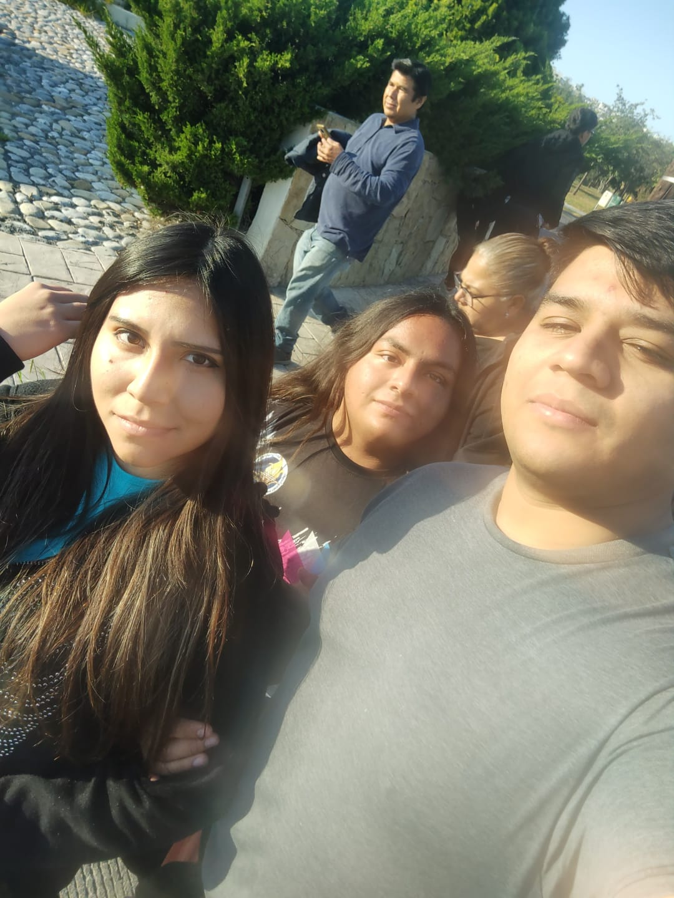
Antes de nuestro día especial, me acompañaste a una carrera organizada por la preparatoria de mi hermana. No solo fue divertido correr juntos y organizarnos para llegar luego a la uni, sino que ese día conociste más a mi familia y le caíste de maravilla a mi hermana.
Lo gracioso fue después... tras bajar peso en la carrera, se nos hizo tarde pero pasamos por unos taquitos para volver a subirlo. 🌮 Jajaja.
Y entonces llegó el 26 de noviembre. Fuimos a Sendero Santa Catarina.
Yo no tenía planeado pedirte que fueras mi novia ese día. Faltaba tiempo para la quincena, no tenía mucho dinero y yo quería hacerte algo súper especial para que nunca lo olvidaras. Pero me diste una cachetada con guante blanco.
Me recordaste que tú no estabas conmigo por bienes materiales ni económicos, sino que genuinamente me amabas. Que aún fuera con poco o con mucho, íbamos juntos en el camino.
Comimos comida china, platicamos de todo, y fue en ese momento que lo supe con total certeza.
Fue ahí mismo, dentro de Sendero, donde por fin te pedí ser mi novia.
Incluso viendo este video nuevamente, noto tu emoción cuando te abracé y te di ese beso. Fue el inicio oficial de esta aventura, y la mejor decisión de mi vida. ❤️
Nuestro primer año ❤️
En el año 2025 pasamos muchos momentos importantes que fortalecieron nuestra relación. Tuvimos varias salidas, pero una de las que más recuerdo con mucho cariño es de cuando fuimos al HEB a comer juntos, mientras nos tomábamos fotos jugueteando como normalmente lo hacemos.
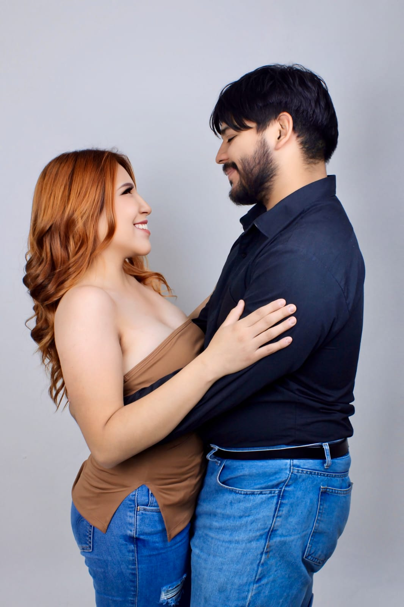
Siempre me ha encantado esta foto, porque no te asustaste con mi forma de ser; al contrario, te dejaste llevar. Y eso, créeme, lo valoro. Y más porque esa es la viva imagen de que verdaderamente conectamos.
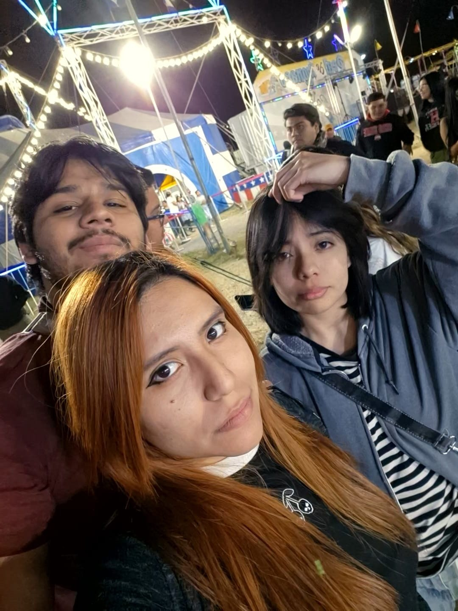
Me permitiste empezar a conocer a tu familia, y eso significa demasiado para mí, porque al final de cuentas para mí eso demuestra seriedad en la relación. Además, en ese momento fue de las primeras veces que fuimos a una feria juntos. Yo sé que hemos querido ir a otra y, aunque de momento no hemos podido, créeme que no se me olvida, amor. Te llevaré, mi niña. 🥺🥺
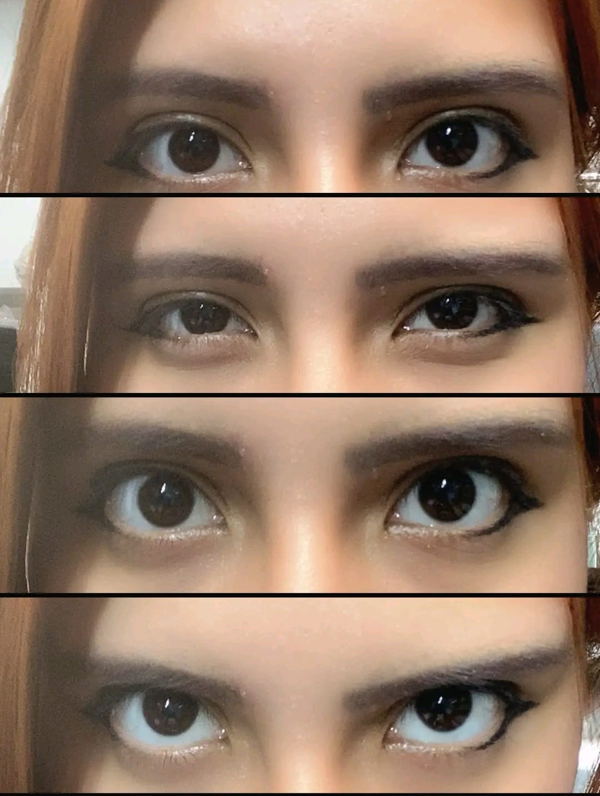
Me cumpliste un deseo que tenía, y era el hecho de tener una foto de tus ojos. Y como te has dado cuenta, es mi fondo de pantalla de bloqueo: es una foto que me encanta, ya que en ella hay una de las tantas cosas que me gustan de ti. Créeme cuando te digo que tus ojos reflejan mucho tus emociones; me terminas encantando con tan solo mirarme a los ojos.
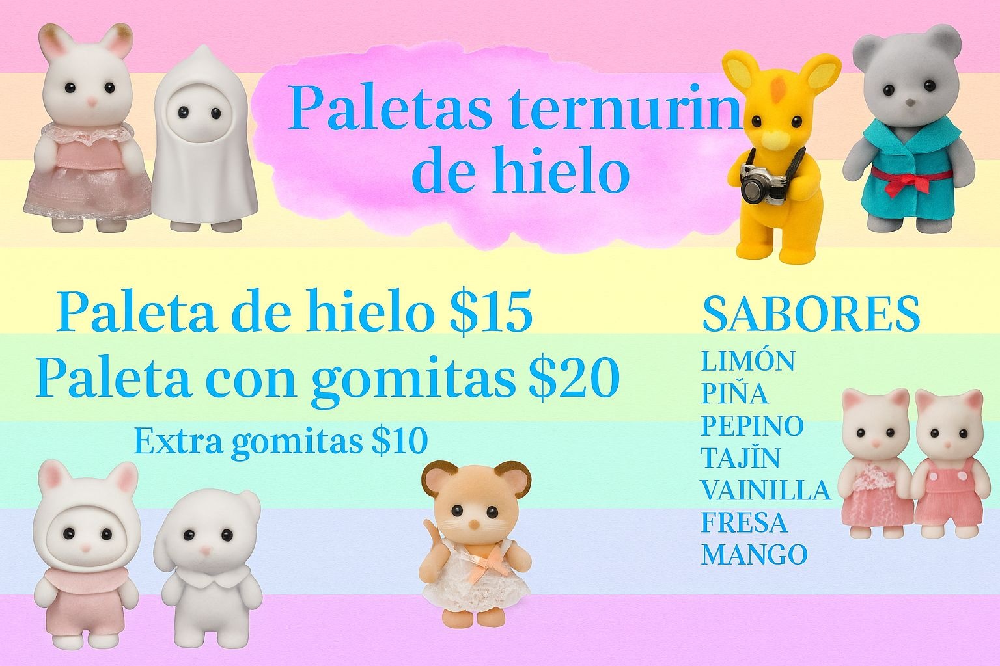
También tuvimos nuestra primera sesión de fotos juntos. Siendo sincero, me divertí demasiado teniendo la sesión contigo: mi primera sesión en pareja, y con una gran experiencia.
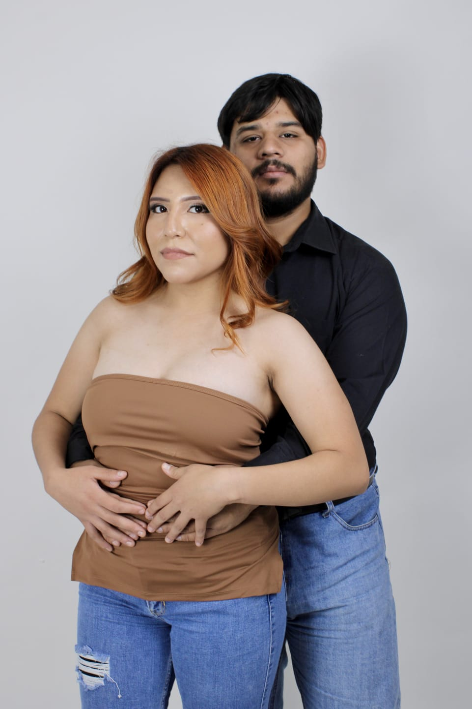
Donde también tuve el honor de verte en persona por primera vez en vestido. Te veías tan hermosa que la naturaleza misma sintió celos de tu belleza, amor.
Dentro de la misma salida íbamos en el camión y es que, a pesar de que en ese momento no llevábamos mucho tiempo, me hiciste saber lo que realmente es amar. Y por eso en esta historia que subí a Instagram puse esta canción, porque tú me hiciste sentir lo que dice la canción.
Después nos movimos para empezar con nuestro propio negocio, que yo sé que tal vez pienses que fue un 'error' o que 'no funcionó'. Pero créeme que funcionó: me hizo ver que como equipo también somos muy funcionales, no solamente como pareja. Además, aprendí mucho y disfruté salir a vender. uwu
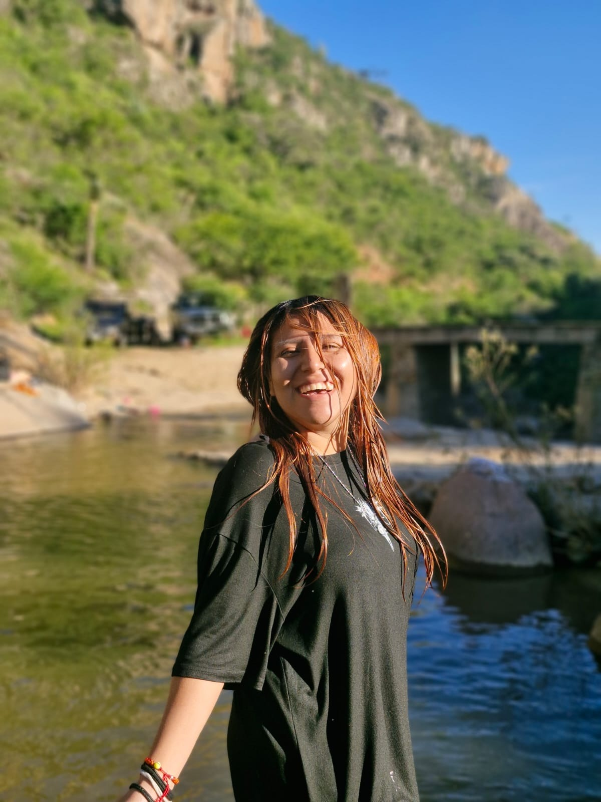
A mitad de año, en Tierra Nueva, San Luis Potosí, uno de los mejores viajes que he tenido en toda mi vida. En aquel viaje dormimos juntos por toda una semana, reímos, conectamos, nos divertimos, incluso sin estar conectados a redes. Créeme que esos días me sentía demasiado en paz, feliz. Realmente quiero que volvamos a ir; me encantó estar ahí, y no es por el clima, tampoco por la desconexión, sino porque en todo momento estuvimos juntos.
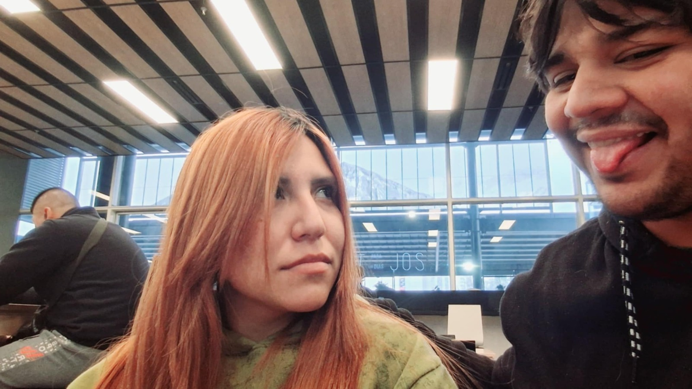
Siempre me ha enamorado tu forma de ser, amor, y me encanta cuando puedo capturarlo en fotografía. Puedo afirmar que tú eres la persona que me va a acompañar todo el resto de mi vida, porque en mi cabeza no cabe el pensamiento de hacer una vida sin ti. Ya formas parte de mi existencia. ❤️❤️
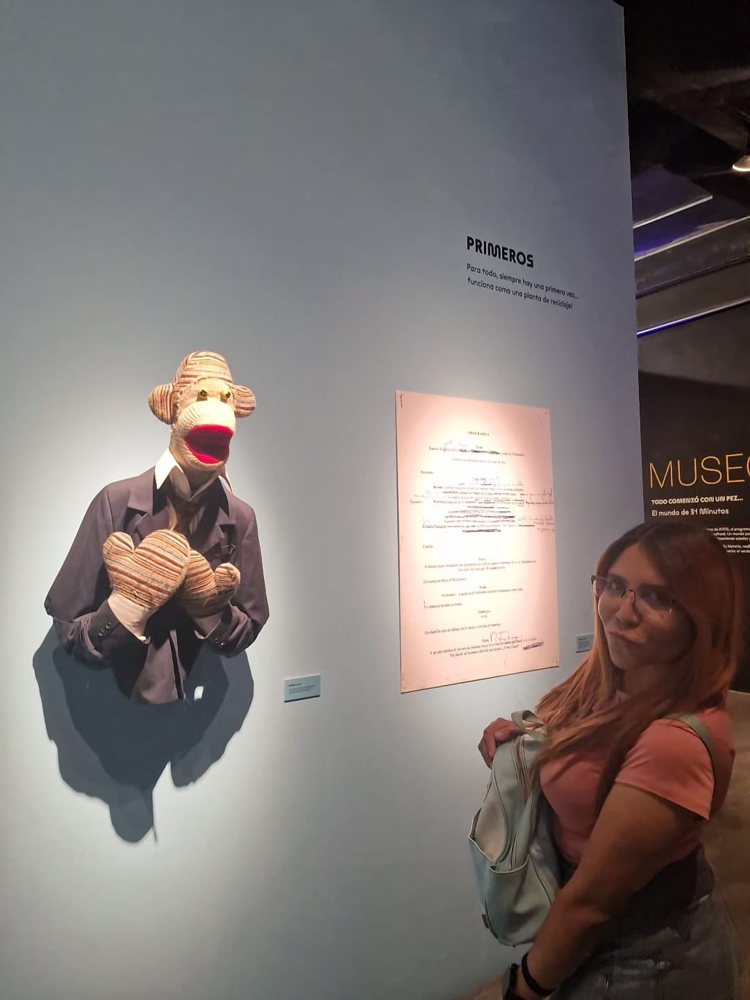
Recuerdo que fuimos a la exposición de 31 Minutos muy emocionados, jajaja. La verdad me encantó esa salida junto a ti, amor, ya que pudimos tener momentos de risa, de nostalgia, viendo cómo fue avanzando la serie, y lo mejor es que lo hicimos juntos 🥺❤️
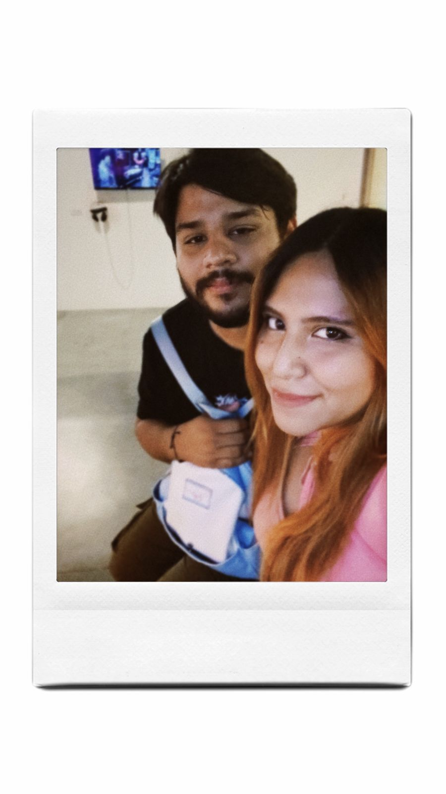
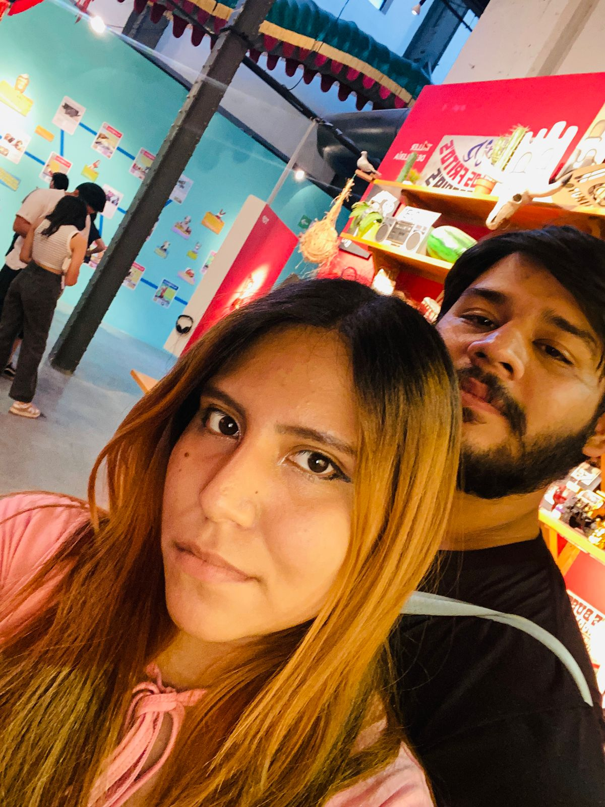
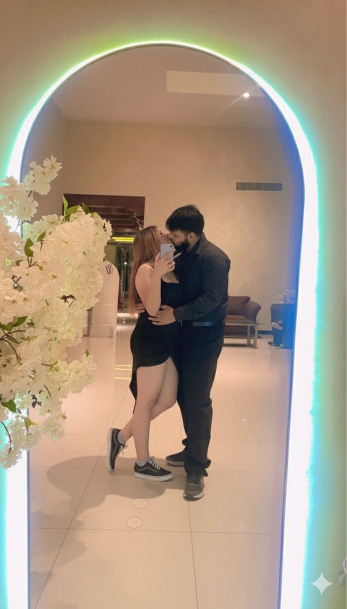
Recuerdo bien que en esta boda te pude ver peda por segunda vez, jajaja. Yo andaba bien preocupado por ti, pero me la pasé muy bien contigo. Y es que una de las cosas que valoro mucho es que sabes que muchas de las cosas que digo en esos ambientes es por cuidarte; al final siempre voy a ver por tu felicidad y seguridad, amor ❤️
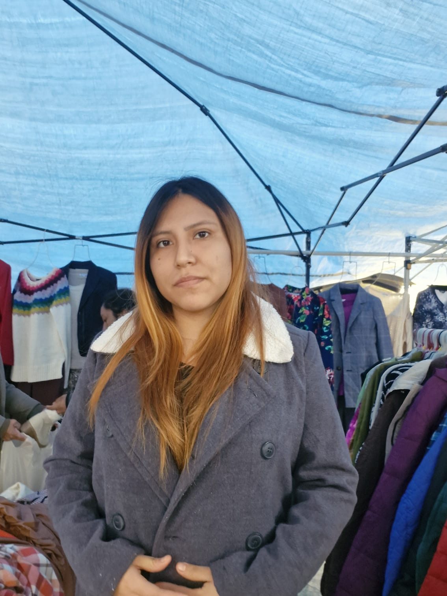
Uno de nuestros últimos viajes en el año, y que a pesar de que fue diferente al de Tierra Nueva, en Monclova tampoco fue malo, porque ahí también estábamos pegados como chicles. Yo creo que si me tuviera que quedar con un momento del viaje, fue cuando íbamos en la carretera, y no por el hecho de no disfrutar estar en la casa de tu tía o directamente por otra cuestión, sino que en la carretera estábamos más pegados, y cada momento pegado a ti para mí vale oro.
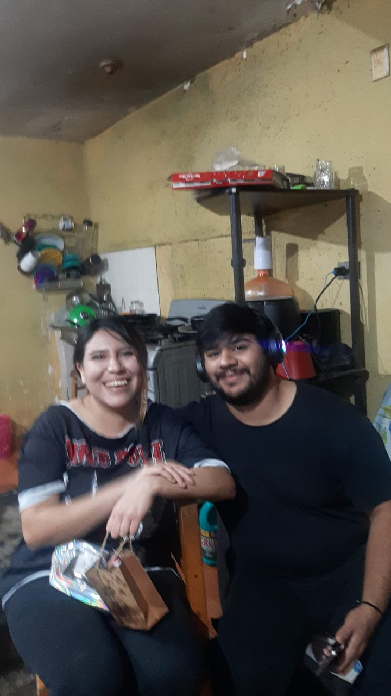
Y ahora sí, Navidad y Año Nuevo en 2025 tuve la oportunidad de estar junto a ti en estas festividades. Realmente hiciste que esas festividades tuvieran otro significado, porque créeme que contigo hago hasta lo imposible para verte feliz, así como cuando fui a buscar uvas verdes a última hora, nada más porque te quería hacer feliz. Recuerdo que iba más rápido que Toretto en mi bici con tal de encontrar alguna tienda, y lo logré. Créeme que ver tu felicidad en cuanto te di las uvas fue el mejor cierre de año que pude tener 🥺❤️
730 días ❤️
730 días.
Cuando lo veo así, en días, me doy cuenta de todo lo que hemos vivido. Dos años se dicen rápido, pero 730 días son 730 veces elegirnos, reírnos, aprender, pelearnos y reconciliarnos, y seguir aquí.
Hemos vivido cosas buenas, cosas malas y cosas increíbles. Y en todas, tú me recordaste lo que me dijiste en Sendero: que no estabas conmigo por lo material, sino porque me amas de verdad. Con poco o con mucho, íbamos juntos en el camino. Y aquí seguimos.
Gracias por estos 730 días. Por el parque, las canciones, el Venado, la carrera y Sendero… y por todo lo que vino después y todavía no cabe en estas fotos.
Feliz aniversario, mi amor. Que vengan muchos días más.